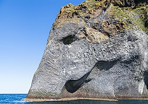
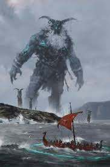
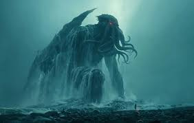
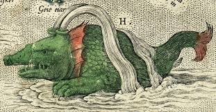
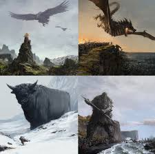
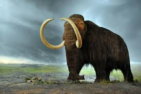
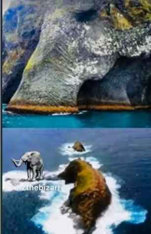

THE ELEPHANT ROCK

Introduction
The Elephant Rock, or in Icelandic Halldórsskora, is one of the most famous natural rock formations in Iceland. This rock is renowned for its shape, which resembles a giant elephant's head dipping its trunk into the sea. This geological marvel is located on Heimaey Island, the largest of the Westman Islands off the southern coast of Iceland.
Halldórsskora refers to "Halldór Cliff," an old local name, but the name "Elephant Rock" has become more internationally famous due to the visual similarity (pareidolia – the phenomenon of seeing familiar shapes in nature).
History
The islands were discovered by the Vikings around 874 AD and named "Hemai" (home island) because of their use as a refuge for fishermen. The elephant is not mentioned in traditional Icelandic culture (the word "elephant" is borrowed from the Vikings after they heard about it from a Turkish trader), but the rock has become a local symbol of volcanic power.
Although some popular sources link it to the 1973 eruption of Eldfell volcano (which added new land to the island and created a modern volcanic landscape), geologists maintain that the rock is much older—estimated to be around 15,000 years old or more. The 1973 eruption contributed to shaping the surrounding landscape, but it did not create the rock itself.
Theories
Some claiming that the Elephant Rock is a remnant of a pre-Viking civilization in Iceland. Iceland was home to an unknown civilization before the Vikings arrived, and that this civilization carved massive statues into the volcanic rocks. They regard the Elephant Rock as a "sole artifact" of their colossal art, and they cite the elephant's shape as being "too precise" to be natural, supporting the idea of ancient human intervention.

Some researchers link the Elephant Rock to Viking mythology, referring to the race of giants known as the "Jötnar," who inhabit the mountains. It is claimed that these beings were capable of carving entire islands, and that the Elephant Rock is a "commemorative sculpture" of an animal revered by these giants.
Some posts in history claim that the Elephant Rock was not naturally formed, but was carved by the Vikings or an ancient Thule people ("Hyperboreans") to honor volcano deities like Surtr in Norse mythology. They suggest the "elephant" shape symbolizes Viking voyages to the East, and claim the rock contains secret caves filled with enchanted books or maps to lost Atlantis. Some theories also link it to secret Nazi bases beneath the ice, where the rock was allegedly used as a marker for volcanic flying saucers.
Pioneers of history link the Elephant Rock to a speculative theory claiming that the Atlantean civilization extended as far as the North Atlantic. They allege that the Elephant Rock is a "sacred symbol" or "gateway" remnant from their civilization. It is commonly connected to other animal-shaped rocks to create a global "network of artifacts" supposedly attributed to Atlantis.
Some claim that the elephant was a real creature that lived in the North. asserts that a massive animal resembling an elephant actually lived in Iceland thousands of years ago. According to this claim, the inhabitants of an ancient civilization carved it in its honor, and the Elephant Rock is the "last monument" to that animal. Proponents of this theory exploit the fact that the shape is truly and strikingly similar to an elephant to reinforce the idea that the formation is not entirely natural.
Sufis associate the Elephant Rock with representations of beings from the Agartha or Shambhala civilization. This theory posits the existence of an underground civilization, and that the statues on the coasts, such as the Elephant Rock, are actually markers indicating gateways to their world. Thus, the Elephant Rock is seen as a "stone seal" covering the northern entrance to this secret civilization.
Some content creators link the Elephant Rock to a phenomenon they call "Ancient Oceanic Guardian Statues." They claim that all ancient civilizations used to carve massive statues to guard their coasts, and that the Elephant Rock is one of those statues whose purpose was to protect the island from "sea creatures."

Promoters of conspiracy theories inspired by the works of H.P. Lovecraft (particularly on platforms like X and specialized Reddit forums) claim that the Elephant Rock resembles the face of Cthulhu more than an elephant, with the trunk being seen as an "octopus tentacle" and the wrinkles as sea monster scales. They suggest the rock is a gateway to Cthulhu's hidden realm beneath Iceland's ice, linked to the "Hollow Earth" theory, where monsters allegedly fled after the Atlantis catastrophe. This theory connects Iceland's volcanoes to "vents" for other worlds, and they claim that tourists are prohibited from approaching because the rock "pulses" with strange energy.
A fantastical legend is circulating on fantasy pages, claiming the existence of a race of "sea fairies" who guarded the islands. This story alleges that these beings would leave animal statues as protection markers, and that the Elephant Rock is one of these statues left by the sea fairies as a sign of their presence and guardianship over the island.

Some occasionally link the Elephant Rock to a massive mythical creature from ancient Norse heritage called the Hafgufa Sea Bull. This sea monster is mentioned in Norse manuscripts. Proponents of this theory claim that the statue might have been a tribute to this legendary creature, or that it represents its "head" as it emerges from the water, adding a Northern mythological dimension to the geological formation.
Some pages claim that the Elephant Rock might not represent an elephant, but rather symbolizes an extinct sea creature that resembled an elephant with a long trunk, and was sacred to a primitive maritime people. They assert that the rock is a statue carved in its honor, and they link this formation to the ancient "Sea Elephants" legend.

Icelandic legends link the Elephant Rock to the myth of the Incarnation of the Island Spirit (Landvættir), a genuine and widespread idea in Scandinavian folklore that every region has a "spirit/guardian" called a Landvættir. This idea, which is popular on Scandinavian mythology pages, claims that the Elephant Rock is the living embodiment of the Westman Islands' guardian, lending it a spiritual and mythical dimension as the island's protector.
Proponents of theories claim that the existence of elephant-shaped rocks in distant locations such as Iceland, India, China, and Thailand is proof of a single, shared ancient civilization that carved animals across the world. They describe this civilization as being: transcontinental and older than known civilizations; it used colossal animal symbols as a means of communication or strategic positioning; and it disappeared after a cosmic catastrophe or a great global flood.
The Arctic-Asia Bridge theory connects the Elephant Rock in Iceland to the migration route of an ancient civilization. The theory suggests that this civilization crossed from Asia through Siberia and the Arctic to Iceland, leaving behind colossal "elephant" statues as markers along this transcontinental route.
Some scholars connect the Asian giants mentioned in mythology (such as Naga/Yaksha) with the Norse giants of Scandinavian folklore (Jutnar). They claim that the same "monstrous beings" credited with carving the hills in Asia migrated north and carved the Elephant Rock in Iceland, suggesting a common origin for giants in world mythology.

A widespread theory circulating posits the existence of "The Lost Mammoth Culture," which migrated along a route starting from Africa, passing through Asia and Siberia, and reaching the Arctic. The theory suggests that this civilization lived alongside mammoths and mastodons, worshipped the "elephant shape," and consequently carved sites resembling it around the world. In this context, it is claimed that the Elephant Rock in Iceland is not an elephant, but a petrified Siberian mammoth creature.

Roger Spurrier (from the Mudfossil YouTube channel) promotes the "Mud Fossils" theory, claiming that the Elephant Rock in Iceland is not a natural volcanic formation, but is actually the petrified carcass of a giant elephant (or mammoth) that was fossilized during the Global Flood mentioned in religious texts thousands of years ago. They suggest that the curved trunk and the wrinkles visible on the rock are actually "real skin" preserved by volcanic mud. The theory postulates that the Icelandic government is concealing geological analyses to prevent proof of the "true history" before divine intervention. This idea has spread in videos linking the rock to other formations, such as the "Elephant Islands" in Hawaii, as evidence of giant animals that lived in ancient Iceland.
A circulating story links the Elephant Rock to the Hindu deity Ganesha, claiming that he immortalized an elephant who was his former lover in a previous life, after she was cursed by the gods. This connects the rock to the idea of "divine petrification" as a form of punishment or eternal commemoration.
A mythical narrative is circulating, claiming that the Hindu deity Ganesha loved a sacred female elephant in a past life, but the gods cursed her, causing her to petrify at the "end of the Earth" (Iceland). To immortalize her, Ganesha allegedly bound her spirit to the rock. According to this legend, the Elephant Rock in Iceland represents her petrified body, while the lines visible on the rock are the "traces of Ganesha's touches." Furthermore, the surrounding ocean in Iceland is referred to within the context of this myth as "The Sea of Tears."
The mythical narrative linked to the deity Ganesha and the petrified female elephant adds that the reason for her presence in Iceland is her "exile to the 'ends of the Earth'"; proponents of the legend claim that the cursed spirit was specifically banished to the frozen North, and that Iceland was considered the "end of the world" in this context. They interpret the Elephant Rock's location on a black sand beach on the island as physical evidence of this eternal banishment.
Research
The word "mimetolith" -- derived from the Greek "mimetes" for "imitation" and "lithos" for "stone" -- is often used to describe such rock formations. One former American professor of geology, Richard V. Dietrich, published an illustrated overview of such formations that can be downloaded from the library of Central Michigan University.
Perceptions of these formations as actual elephants, sea turtles or other wildlife stems from a phenomenon called pareidolia, which is defined by the Merriam-Webster Dictionary as "the tendency to perceive a specific, often meaningful image in a random or ambiguous visual pattern."